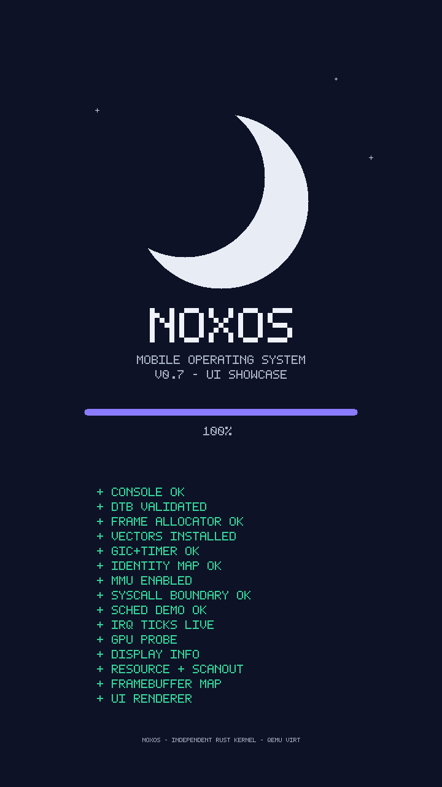

Boot integration status
Emulator boot contract (QEMU virt) — VERIFIED
The v0.2 kernel boots via:
qemu-system-aarch64 -M virt -cpu cortex-a53 -m 512M \
-nic none -nographic -kernel target/aarch64-unknown-none/debug/noxos
Verified boot facts (QEMU 10.0, hw/arm/boot.c + empirical):
- -kernel <ELF> loads the ELF at its linked addresses and enters at the
ELF entry point. The CPU is left at EL1 in the Secure state; DAIF
is masked; MMU and caches are off.
- For ELF boots QEMU does not pass the DTB address in x0 (x0 = 0).
QEMU installs its generated FDT at the base of RAM (0x40000000) only
when the kernel image leaves room: the install is skipped when the FDT
(1 MiB on virt) does not fit below image_low_addr. Linking the
kernel at 0x40200000 leaves 2 MiB free, so the FDT lands at
0x40000000. The boot code honours an x0 pointer when present and
otherwise scans RAM (page steps over the first/last 32 MiB) for the
0xD00DFEED magic.
- QEMU's generated FDT declares a 1 MiB totalsize (allocation padding
included); the parser bounds-checks every access against it.
- The GICv2 interrupt acknowledge path returns 1022 ("no visible
interrupt") for Group 1 interrupts taken from the Secure state without
GICC_CTLR.AckCtl — the bring-up therefore uses Group 0 (see
kernel/src/interrupts/gic.rs).
- The generic timer frequency is read from CNTFRQ_EL0 at runtime
(62500000 Hz observed on -cpu cortex-a53).
Visual proof of the v0.3 graphical boot — a real QMP screendump of the virtio-gpu scanout (720x1280), not a mockup:

Phone boot contract (POCO M6 Pro 5G / SM4450) — NOT VERIFIED
The v0.2 project intentionally does not contain a phone-specific boot image.
Before any real-device boot work, establish from authoritative device sources: - exact model and region variant - supported boot chain and image format - entry exception level and register contract - kernel load address and reserved-memory layout - DTB location, size and lifetime - cache/MMU state on entry - interrupt-controller and timer description - verified-boot and recovery constraints
A generic aarch64-unknown-none ELF is not automatically bootable by an
Android phone bootloader. The Rust target documentation explicitly
requires a device-specific linker script and startup contract.
Initial bring-up should use a harmless diagnostic path and preserve the stock operating system and recovery path. Do not flash any NoxOS artifact to a phone.